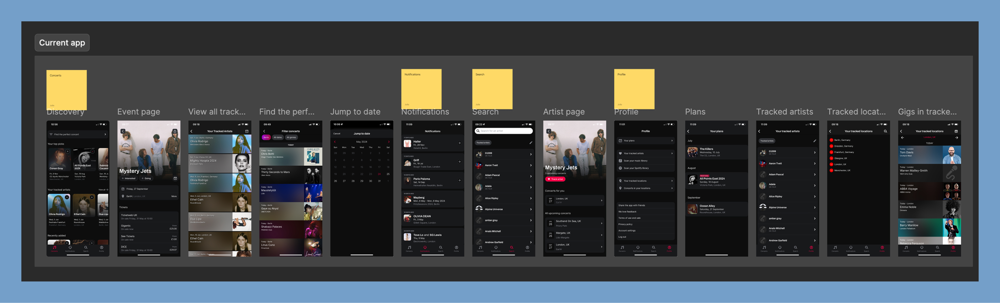
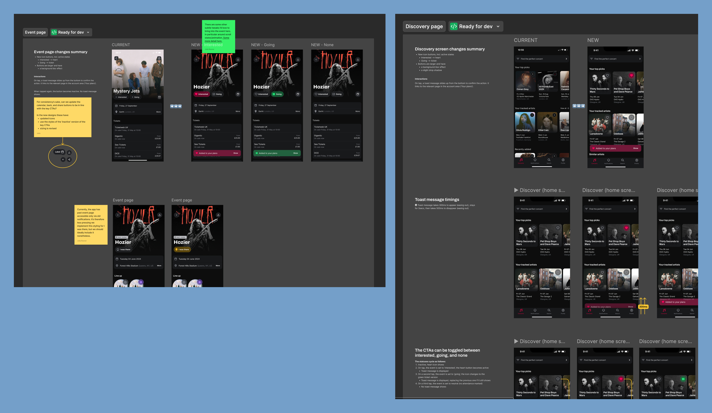
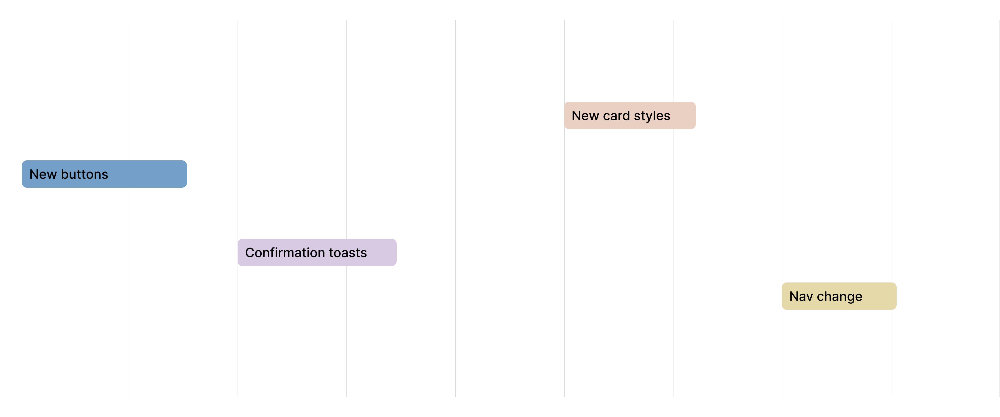

Background
On Songkick, marking 'Interested' or 'Going' to an event is one of the most important actions a user can take. It feeds personalized content, powers re-engagement channels, and directly contributes to marketable audience segmentation—making it central to both the user experience and the business model.
The constraints
At the time of this project, we as the mobile team had been asked to avoid major feature builds and were also working with very limited engineering bandwidth. Shifting focus from building new to optimizing existing, we decided to come together to identify what leverage we did have. Our hunch was that Attendance would be our biggest opportunity area.
Research
I carried out some initial research, observing that while 19% of sessions found an event, only 7% of those also marked attendance (= marking Interested or Going). Meaning that while the quality of recommendations seemed to be in place, engagement mechanisms are lacking.
The business case
Marking attendance is an important metric as it improves long-term user data quality, improves the feed experience, and increases LTV. It also directly feeds Songkick's marketable audience segmentation—a key commercial lever.
Further research
I decided to audit the app to get a better picture of where engagement mechanisms were and weren’t present. Through continuous discovery interviews, I had already gathered insights about how people were using these features, insights which I collated and brought back to the team.

An audit of the current app showed missed opportunities when it came to attendance mechanisms.
Research findings
My research showed that Interested/Going actions were not sufficiently visible, consistent or available at moment of highest user intent. Once attendance is marked, it’s difficult to find the events again. Knowing that Songkick’s core audience of power users go to 20+ shows a year, there is a lot of unused potential to turn this mechanic to a core gig-planning tool.

Design philosophy
Ubiquitous, consistent, reusable
My approach was to ensure the attendance marking options were systemically surfaced at every relevant touchpoint across the app. This was achieved by designing a small set of reusable, high-visibility button components that could be deployed across the entire product ecosystem with minimal engineering work.
For the high-traffic horizontal event cards, I streamlined the secondary action into a single CTA button that cycles through the three possible states (Not Set → Interested → Going). This reduces friction in the highest-volume areas of the app, instantly exposing the core action.

The new Interested/Going CTA family—designed and built once, deployed across every surface in the app
Documenting thoroughly
Once I had my new components, I tested them extensively in the existing screens, documenting all occurrences and planning ahead as much as possible—ensuring work would be ready to go as soon as engineering resource was available.

I made sure my designs were as well-documented as possible, eliminating ambiguity and ensuring a straightforward build process.
A simple nav change
Another issue we sought to tackle was that of 'Your Plans'. This section summarizes a user's saved events, a key component of the Marking Attendance flow. However, this page was buried on the Profile page, reducing discoverability and—since events weren't differentiated by 'Interested' or 'Going' status—made it cumbersome to use as a tool for planning, lowering the incentive to mark attendance even further.
The solution was simple and high-leverage: promote 'Your Plans' to its own dedicated nav item in the bottom tab bar, immediately solving the discoverability issue. I also swapped the list component for its new version which includes the attendance button, allowing users to verify and modify their status without leaving the page—closing the feedback loop and reinforcing the marking behavior.

Promoting 'Your Plans' to the main tab bar immediately closed the feedback loop for attendance marking
Launching in phases
Since many of the proposed changes were ostensibly UI fixes, there were few dependencies—meaning the work could get scheduled around other maintenance work.

Outcomes
The attendance marking rate doubled over the course of three quarters, validating our strategy of targeted, component-level improvements. Each shipped change produced a visible step-change in the metric.

Each shipped iteration produced a visible step-change — from 7% to ~15% over three quarters
Thinking ahead
While our optimization efforts established a strong 15% baseline, I initiated a feature exploration to identify what more radical growth could look like. This centered on redesigning the user profile to include attendance-powered features: a detailed 'Gigography' (a timeline and scrapbook of past events) and a 'Stats' section with data-driven insights into a user's live music habits.
Testing this vision with existing users provided strong initial validation: according to one user, "Right now I have 80–90% of my attendance. Stats would make me add it 100% of the time."

Concept designs for 'Gigography' and attendance-driven stats—both validated as high-motivation features in user testing.